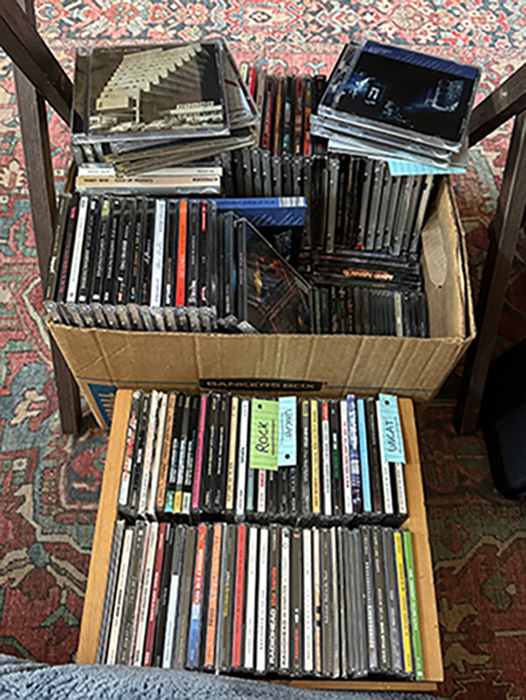
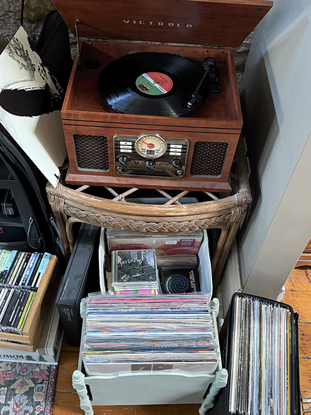
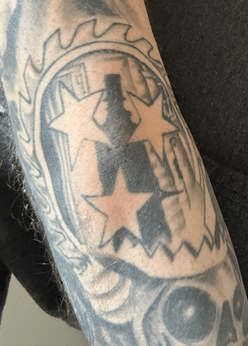
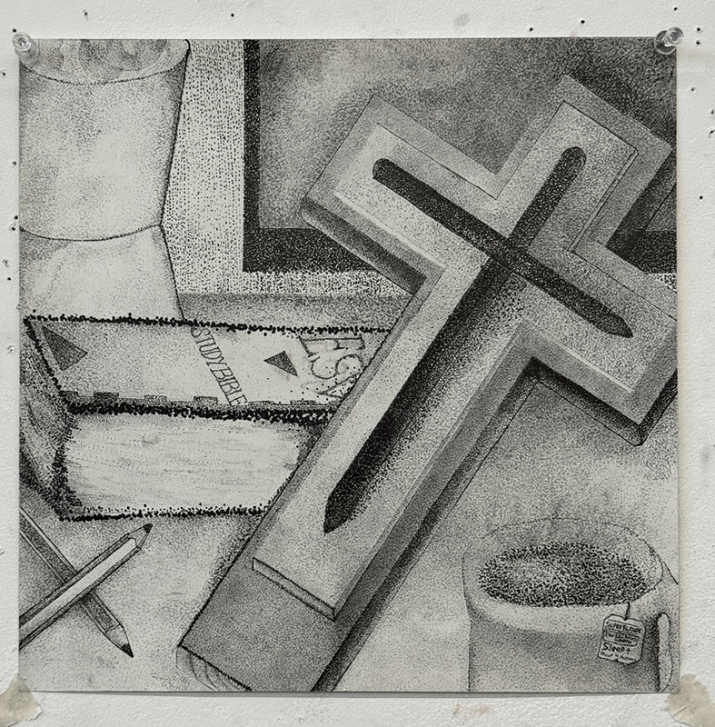
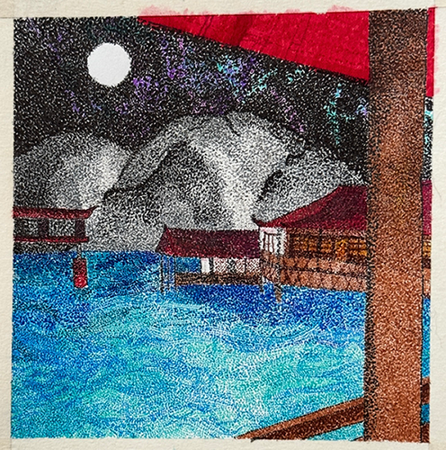
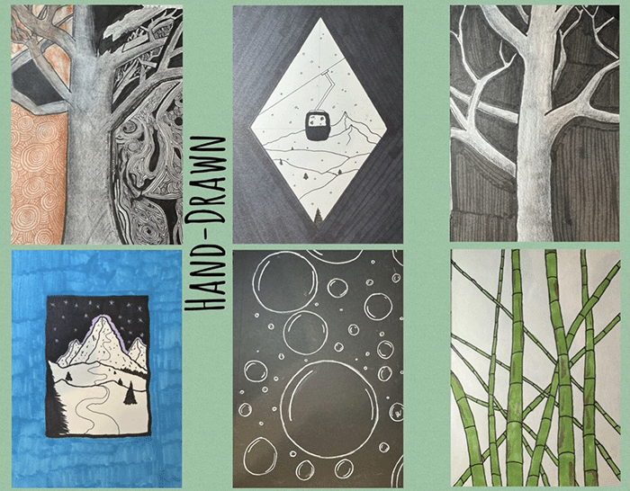
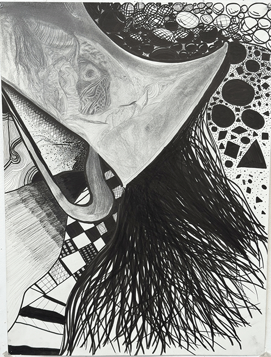
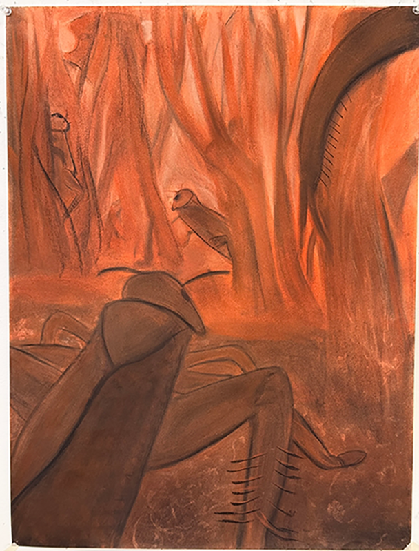
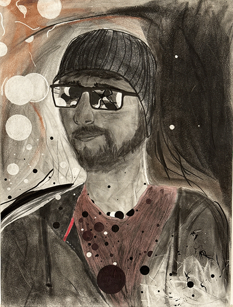

My favorite passtimes:
Music

Most of my spare time is meant listening to music, finding new music or managing my music collection. As a child, my family didn't have a ton of money; so I didn't always get the newest toy or gadget that was being sold and advertised everywhere. However, my dad, who grew up with more siblings and less money growing up, had coped with this over the years with music. It helped him cope with a lot and throughout the years, he kept buying music, kept playing music and always let my brother and I listen to his CDs.
This trait of course was passed along to me. I use music to cope with nearly all of my struggles in life. I also drive about 10-15 hours a week, sometimes even more. So I have plenty of time to listen to music in the car.
By the grace of God, my fiancee Abby loves music just as much as I do; if not more. We have a massive amount of music-taste overlap, but we can still appreciate and enjoy the genres
that the other doesn't usually listen to. Well, I hope Abby appreciates and enjoys the music I primarily listen to: metal. Sure, I listen to popular metal bands like Slipknot, Korn,
and Lamb of God; but I primarily listen to heavy metal.
My top 5 favorite bands, in order of favorite, are:
- Whitechapel
- Молчат Дома (Molchat Doma) - Post-Punk/Synth-Pop
- Vildhjarta - Prog. Rock/Djent
- Slaughter to Prevail - Deathmetal
- Coal Chamber - Gothic Metal
- Chimaira - Groove Metal (and they do be groovin')
I have an extensive amount of music in physical form. This is because as a kid I'd always buy CDs as it was the only way to get the music you wanted unless you pirating them online.
I never saw the appeal in that though because I always enjoy looking at the album art and flipping through the booklets usually included. I feel as though that's
part of the overall experience of the music.
As of today (Thursday, 10/22/2026), I have 229 pieces of physical music media. I only know that because I use the website Discogs and have uploaded my entire collection - it totaled them for me. That's not purely CDs, though. Over the last couple of years, I've grown my collcetion of two vinyls into a collection of nearly 20. The key inspiration behind this is that I got a record player and can actually listen to my records, haha.

I usually enjoy listening to full albums versus putting a mix of them on a playlist. Sometimes it's still easier to just put on a Spotify playlist but I'm much more likely to skip songs. If I hear one "type" of song, even if the next song is a great song, it may not match the "type" of the last song - so it gets skipped. When I listen to a full album I think I can appreciate each song much more.
Whitechapel is a deathcore band from Tennessee. I can listen to every album from start to finish while enjoying every second of it; and it's rare for me to find an album in general that I can enjoy that much. I even have a tattoo of their band's sawblade logo on my left elbow. I've seen them in live once and got an album signed. I completely lucked out when I ordered their "Recorrupted" album on Amazon and received a copy that was signed.

Here's a link to my Discogs profile if you're curious about my overall collection.
My Discogs ProfileVideo Games
Video games have always been a part of my life since I was in grade school. My first ever console was the GameBoy Color and the only game I had was Pokemon Red.
Though within the first
few years of having it, I got Pokemon Yellow as well. I remained with Nintendo up until Christmas of either 2005 or 2006. My parents had saved up enough money to buy my brother and I the original
Xbox console. The only game we had was a Crash game, but we went to GameStop a few days later and traded it for LucasArts Star Wars Battlefront II.
Star Wars Battlefront II was my favorite game and practically all I played. However, eventually my brother and I got our hands on a copy of Halo 2. We totally fell in love with that game. This evolved my video game taste from mainly enjoyin "combat simulator" type games to games with more immersive stories. From there, I continued playing the Halo franchise and got into several other large game franchises. Eventually, I found myself primarily playing Halo, Battlefield, or open-word adventure games such as Skyrim and Fallout.
My current favorite games (in no particular order) are:
- Ghost of Yotei
- Hell Let Loose
- Skyrim
- Fallout 4
- Arma 3
Art
Although it's not always feasible because of time, space or material, I love to draw. I've recently started painting, but I've only done a few paintings and am not too confident yet. The first few semesters at JCCC I would take an art class to keep the creative side of my brain active still. I'd never had formal drawing instruction before and I'm so glad I decided to take those classes despite how time-taxing they were. I learned a lot from those classes and feel like I've unlocked a lot of my creative potential.





